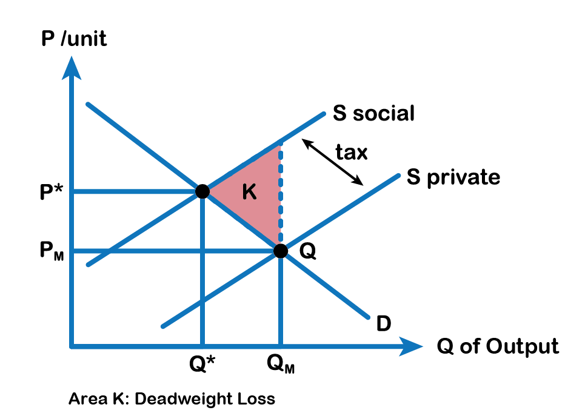
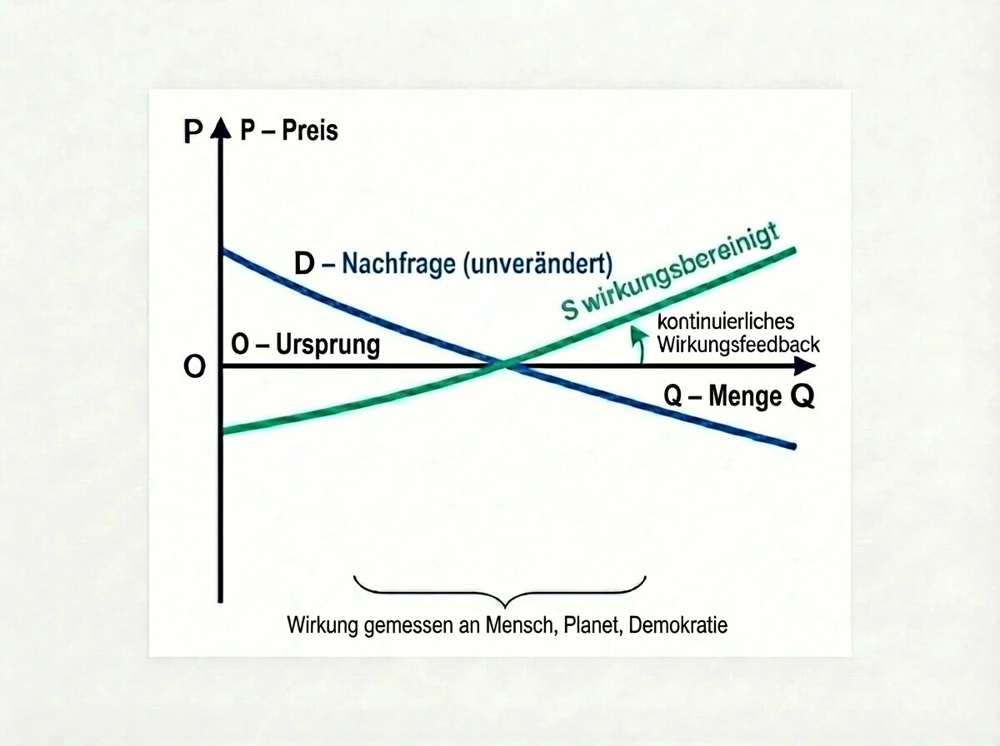

1. Warum diese Debatte gerade jetzt geführt wird
Immer wieder begegnet mir der Einwand, die Wirkungsökonomie sei im Kern nichts anderes als eine Pigou-Steuer in neuem Gewand. Dieser Vergleich ist verständlich - aber er greift zu kurz.
Denn er verwechselt ein einzelnes ökonomisches Reparaturinstrument mit einem grundlegend anderen Steuerungsmodell.
Um diesen Unterschied sauber herauszuarbeiten, lohnt ein kurzer Blick auf die Pigou-Steuer selbst.
2. Was die Pigou-Steuer tatsächlich leistet
Die Pigou-Steuer ist ein klassisches Instrument der Wohlfahrts- und Umweltökonomik. Sie adressiert sogenannte negative Externalitäten - also Schäden, die im Marktpreis nicht enthalten sind, etwa Umwelt- oder Gesundheitsschäden.
Die Logik ist bekannt:
Unternehmen berücksichtigen nur private Kosten
Gesellschaftlich relevante Kosten bleiben ausgelagert
Der Markt produziert dadurch zu viel von schädlichen Gütern
Eine Steuer soll diese externen Kosten nachträglich internalisieren
Grafisch wird das meist dargestellt durch:
eine private Angebotskurve
eine soziale Angebotskurve
einen Steuerkeil zwischen beiden
und ein neues, „korrigiertes“ Marktgleichgewicht
Die Pigou-Steuer ist damit ein externer Eingriff, der versucht, ein bestehendes Marktversagen zu reparieren.

3. Die strukturelle Grenze der Pigou-Logik
So elegant dieses Modell ist - es hat systemische Grenzen:
Es ist eindimensional (meist ein Schadstoff, ein Preis)
Es ist statisch (politisch festgelegter Steuersatz)
Es wirkt ex post, nachdem Schäden bereits entstanden sind
Es reduziert komplexe Wirkungen auf monetäre Näherungen
Vor allem aber: Die Pigou-Steuer ändert nicht die Steuerungslogik des Marktes. Sie setzt weiterhin voraus, dass Gewinnmaximierung der primäre Maßstab ist - und korrigiert lediglich einzelne Fehlentwicklungen von außen.
4. Der Perspektivwechsel der Wirkungsökonomie
Die Wirkungsökonomie setzt nicht bei der Reparatur an, sondern eine Ebene früher.
Sie stellt nicht zuerst die Frage: „Wie teuer ist der Schaden?“
Sondern: „Was bewirkt diese wirtschaftliche Aktivität systemisch?“
Und zwar entlang mehrerer gleichrangiger Dimensionen:
Wirkung auf Menschen
Wirkung auf den Planeten
Wirkung auf demokratische Stabilität
Wirkung wird damit nicht zum Korrekturfaktor, sondern zur primären Steuerungsgröße wirtschaftlichen Handelns.
5. Erklärung der beigefügten Grafik

Die beigefügte Grafik ist bewusst formal vergleichbar mit klassischen Angebots-Nachfrage-Diagrammen - und unterscheidet sich dennoch in einem entscheidenden Punkt.
Sie zeigt:
eine klassische Nachfragekurve (D)
eine einzige Angebotskurve, bezeichnet als S wirkungsbereinigt
keinen Steuerkeil
keinen externen Eingriff
kein fixes Optimum
Stattdessen passt sich das Angebot kontinuierlich an, gesteuert durch Wirkungsrückkopplung.
Die Preise entstehen nicht durch nachträgliche Besteuerung, sondern aus der gemessenen Wirkung selbst. Positive Wirkung senkt strukturell Kosten, negative Wirkung erhöht sie.
Das System lernt.
6. Der zentrale Unterschied
Die Pigou-Steuer:
korrigiert Preise von außen
reagiert auf Schäden nachträglich
bleibt im Kosten- und Reparaturparadigma
Die Wirkungsökonomie:
steuert Märkte von innen
wirkt ex ante
ersetzt Gewinn- durch Wirkungsmaximierung als Leitlogik
Das ist kein Instrumentenwechsel. Das ist ein Kategorienwechsel.
7. Warum diese Logik heute möglich ist
Zur Zeit der klassischen Wohlfahrtsökonomik fehlten:
belastbare Wirkungsdaten
systematische Indikatoren
digitale Rückkopplung
globale normative Zielrahmen
Heute verfügen wir über genau diese Voraussetzungen.
Die Wirkungsökonomie ist deshalb keine Neuauflage der Pigou-Steuer, sondern ihre systemische Weiterentwicklung jenseits des reinen Kostenparadigmas.
8. Schlussgedanke
Die Pigou-Steuer hat gezeigt, dass Märkte falsch liegen können. Die Wirkungsökonomie zeigt, wie wir sie richtig steuern können.
Nicht durch mehr Eingriffe - sondern durch eine andere Logik dessen, was als wirtschaftlicher Erfolg gilt.
Kurzformel:
Pigou korrigiert Preise. Wirkungsökonomie verändert, wie Preise entstehen.